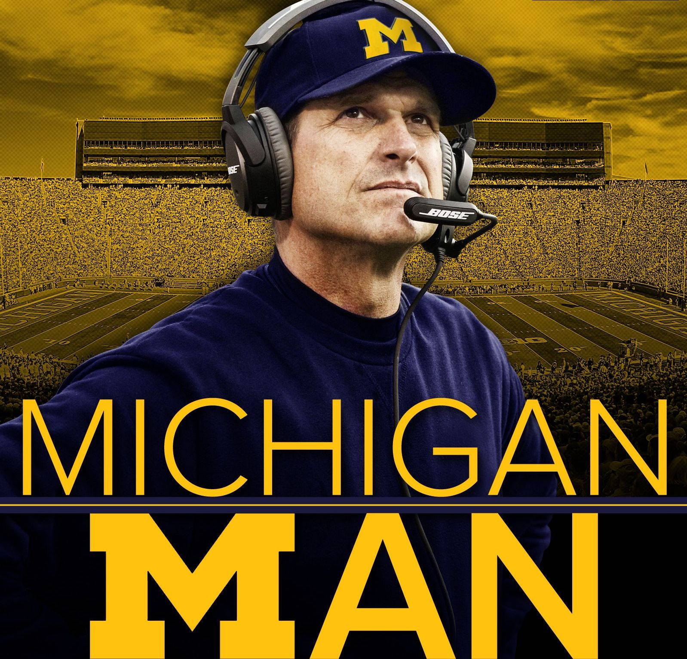

Michigan
My Fellow Wolverines
On May 30, 1879, Michigan played its first intercollegiate football game against Racine College at White Stocking Park in Chicago. The Chicago Tribune called it "the first rugby-football game to be played west of the Alleghenies." Midway through "the first 'inning', Irving Kane Pond scored the first touchdown for Michigan. According to Will Perry's history of Michigan football, the crowd responded to Pond's plays with cheers of "Pond Forever."
In 1881, Michigan played against Harvard in Boston. The game that marked the birth of inter-sectional football. On their way to a game in Chicago in 1887, Michigan players stopped in South Bend, Indiana and introduced football to students at the University of Notre Dame. A November 23 contest marked the inception of the Notre Dame Fighting Irish football program and the beginning of the Michigan–Notre Dame rivalry.In 1894, Michigan defeated Cornell, which was the "first time in collegiate football history that a western school defeated an established power from the east."
The 1898 Michigan Wolverines, the first Michigan team to win a conference title. In 1896, the Intercollegiate Conference of Faculty Representatives—then commonly known as the Western Conference and later as the Big Ten Conference—was formed by the University of Michigan, the University of Chicago, the University of Illinois, the University of Minnesota, the University of Wisconsin, Northwestern University, and Purdue University.[14] The first Western Conference football season was played in 1896, with Michigan going 9–1, but losing out on the inaugural Western Conference title with a loss to the Chicago Maroons to end the season.
By 1898 Amos Alonzo Stagg was fast at work at turning the University of Chicago football program into a powerhouse. Before the final game of the 1898 season, Chicago was 9–1–1 and Michigan was 9–0; a game between the two teams in Chicago decided the third Western Conference championship. Michigan won, 12–11, capturing the program's first conference championship in a game that inspired "The Victors", which later became the school's fight song. Michigan went 8–2 and 7–2–1 in 1899 and 1900, results that were considered unsatisfactory relative to the 10–0 season of 1898.